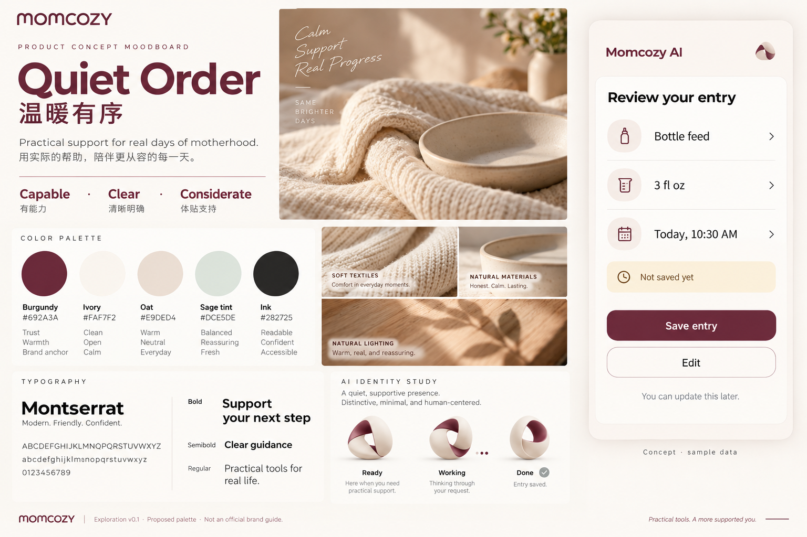
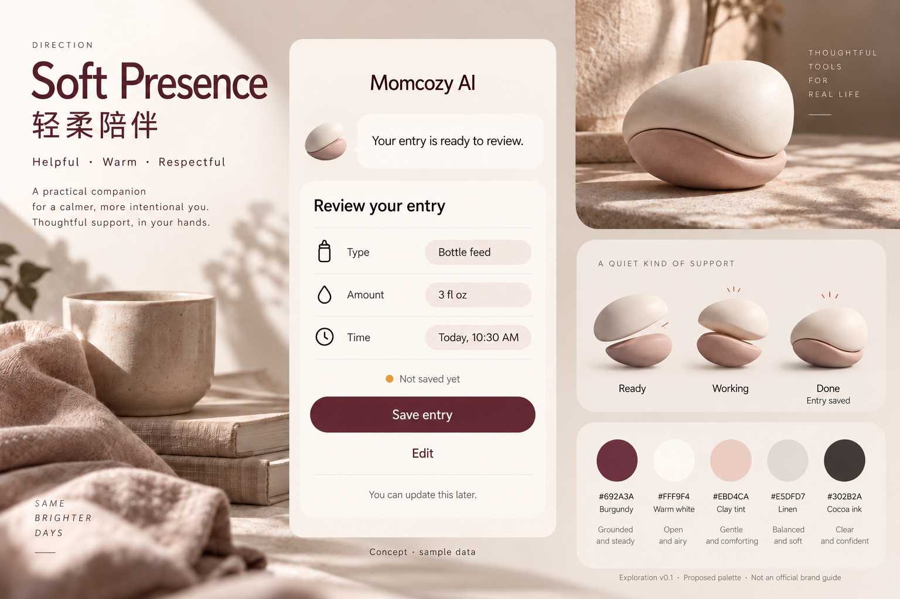
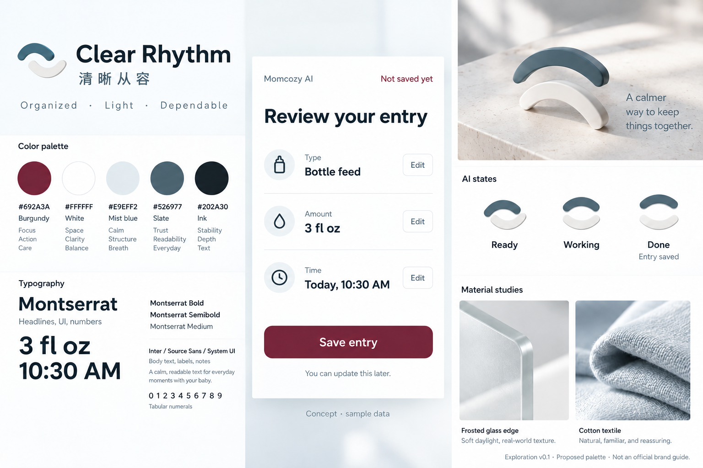

C · 减少事务负担
记录、时间、对象和状态先被看到。输入可核对，结果可找回，错误可修正。
交互、UI 与 AI 形象候选情绪板 v0.1
C 可靠省心的助手 → B 理解妈妈的陪伴 → A 有条理的照护引导
候选材料，尚未选定视觉方向或冻结信息架构。图中均为虚构示例数据。三张情绪板由内置 Imagegen 生成；不代表 Momcozy 官方设计或真实可用界面。
建议优先推进「温暖有序」：用稳定的信息秩序体现可靠，用浅暖背景和克制语言体现关怀，用清晰的状态与下一步体现引导。AI 以小型识别形态参与任务；详细角色造型在方向选定后展开。
记录、时间、对象和状态先被看到。输入可核对，结果可找回，错误可修正。
允许稍后补充。避免责备、排名和打卡压力。日常成功反馈简短，不强行安慰。
区分记录与推断，提供依据和可执行动作。无法判断时明确说明。
统一以“核对并保存一条喂养记录”呈现，比较材质、色彩、排版与 AI 存在感。不同场景的完整页面与异常流程需另行设计。



| 页面／状态 | 控件与功能 | 交互表达候选 |
|---|---|---|
| 记录表单 · 待保存 | 字段、Edit、Save entry | 明确“Not saved yet”；核对与修改入口可见；不得把生成草稿当作已保存。 |
| 记录表单 · 保存成功 | 成功反馈、修改入口 | 仅确认成功后显示“Entry saved”；无需夸奖或情绪评分。 |
| 记录表单 · 保存失败 | 失败说明、重试 | 保留输入，明确下一步；不让用户重复填写。是否本地保存须单独说明。 |
| 哭声任务 · 录制／分析中 | 录音控制、任务状态 | 录音需用户启动；用文字表达正在录制或分析；不模拟未经确认的进度。 |
| 结果页 · 无法判断 | 限制说明、补充入口 | 表达“仅凭这段录音无法判断”；后续动作优先，不用可爱表情掩盖不确定性。 |
| 夜间、权限与通知 | 静音、减少动态效果、任务入口 | 不自动发声；拒绝权限可取消任务。通知若纳入业务范围，再定义重要程度和直达任务规则。 |
以上为设计规则候选，不能直接视为本期已批准的新功能。当前记录奶量的业务含义、保存后的去向、后台分析及通知范围仍需沿用需求评审结果。
官网自动提取观察到主色 #692A3A、白底与 Montserrat。它们只是网页当前呈现，尚未获得官方品牌手册。其余候选色、圆角和材质均属于本项目提案。
| 候选色对 | 计算对比度 | 边界 |
|---|---|---|
| 白字 / 莓红 #692A3A | 10.54:1 | 按 sRGB 相对亮度公式计算。只证明指定纯色色对；没有证明生成图片、细字、控件边界或最终界面全部达标。 |
| #282725 / #FAF7F2 | 13.97:1 | |
| #526977 / #E9EFF2 | 4.96:1 |
独立评审者 /root/moodboard_challenger 检查了设计策略，要求事务优先、保存状态明确、AI 不暗示医疗权威、关怀落实为控制权。已将三图统一任务，并修正首轮生成时出现的日记内容与未经定义的品牌字段。
独立查看首选图稿后，评审确认其整体符合 C＞B＞A；后续需明确单字段与整表编辑的区别、为小尺寸 AI 状态保留文字、验证弱文字和描边的实际可读性。此为概念评审，用户测试与完整 UI 验收尚未执行。